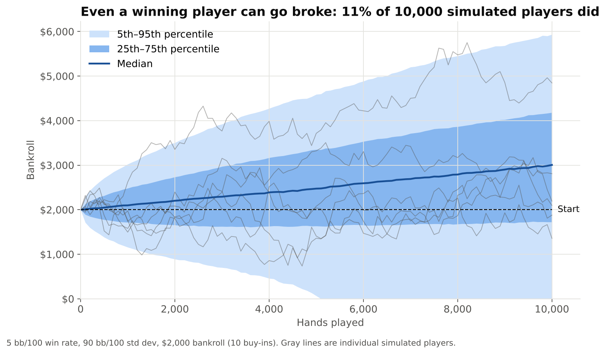
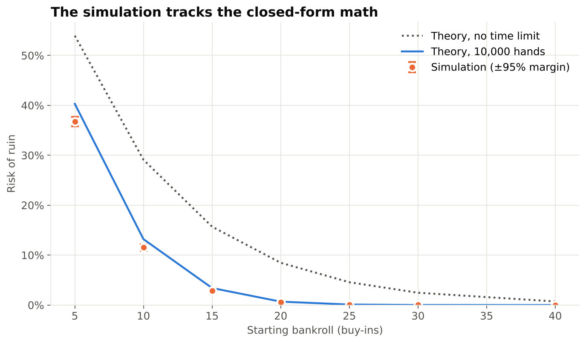
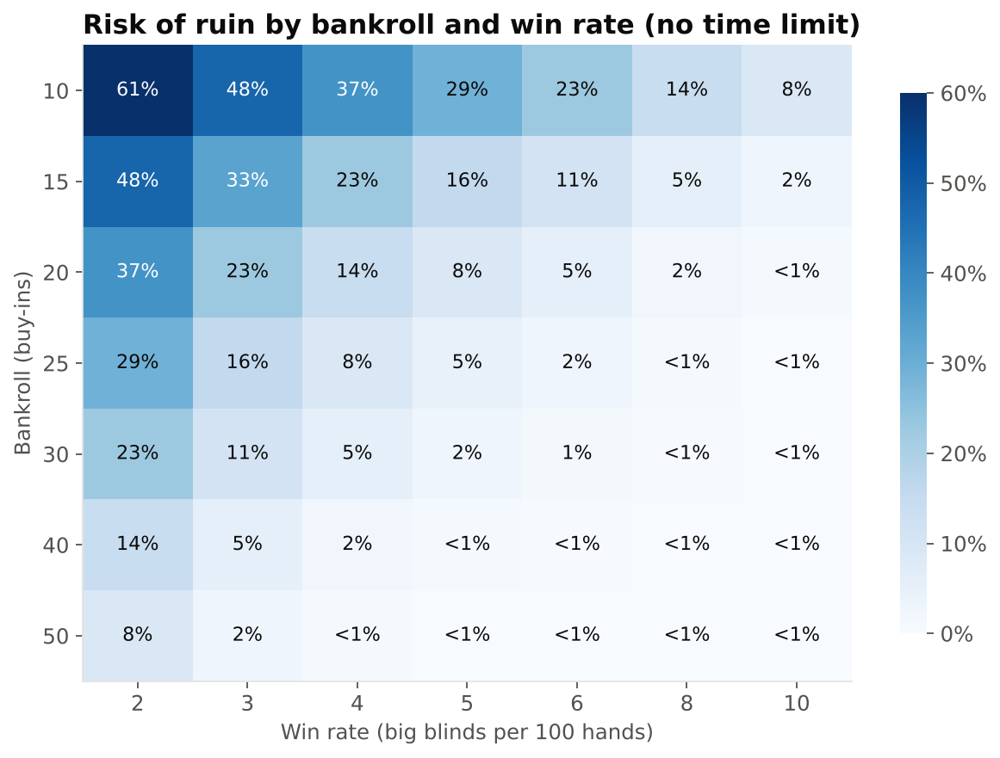
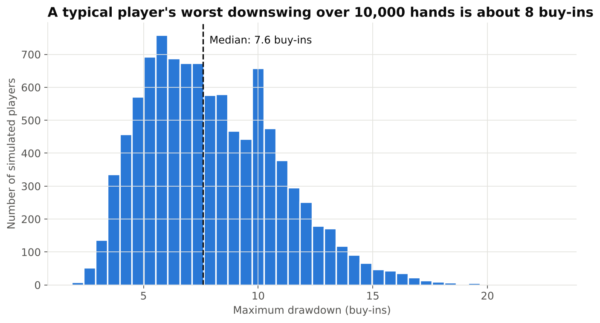
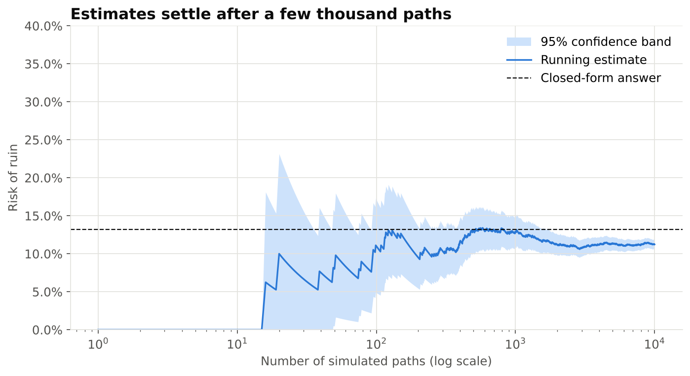

A poker player with a real edge still faces huge swings. How much capital do they need so bad luck doesn't wipe them out before the edge pays off? I simulated 10,000 careers to find out.
Excel
Python
NumPy
pandas
SciPy
Matplotlib
Monte Carlo simulation
Risk modeling
Two of the 10,000 simulated players: same skill, same $2,000 bankroll, opposite outcomes. Simulated data.
Key findings
Having an edge isn't enough
Results for a player winning 5 big blinds per 100 hands with a standard deviation of 90, starting with 10 buy-ins ($2,000) and playing 10,000 hands.
11%
went broke within 10,000 hands despite winning on average
29%
finished below their starting bankroll
~8
buy-ins: the typical player's worst downswing
24
buy-ins needed to cut risk of ruin to 5%
Why it matters
The same question shows up everywhere money is at risk
Positive expected return, high volatility, and a capital base that can hit zero first. Whether you survive depends on volatility relative to your edge, not just on whether the edge is positive.
Trading and investingHow much capital a strategy needs to survive its drawdowns.
Program cost reservesHow much budget margin a project needs to finish on budget at a given confidence level.
Startup runwayThe chance a company runs out of cash before it becomes profitable.
Method
How the model works
SimulateEach block of 100 hands is drawn from a normal distribution using the player's win rate and standard deviation. 10,000 paths of 100 blocks, vectorized in NumPy. A path that hits $0 stays at $0.
MeasureRisk of ruin, the spread of ending bankrolls, and maximum drawdown (the largest drop from a running peak, the same metric used for funds).
ValidateCheck simulated risk of ruin against closed-form results for a random walk with drift, including P(ruin) = exp(−2μB/σ²) with no time limit.
Test sensitivityMap how bankroll size and win rate trade off, and solve for the bankroll that hits a 5% risk-of-ruin target.
I built the model twice: a formula-driven Excel version (500 paths, summary tab, sensitivity table) and a Python version (10,000 paths, validation and convergence tests).
Charts
What the simulation shows

The range of outcomes. The median player grows steadily, but the bottom 5% band reaches $0 around hand 5,000.

Validation. The simulation tracks the closed-form math. The small gap comes from checking the bankroll only every 100 hands.

Skill vs. capital. Risk falls exponentially with bankroll size. Doubling the win rate roughly halves the bankroll needed.

Drawdowns. A typical player's worst losing stretch over 10,000 hands is about 8 buy-ins.

Convergence. The estimate settles after a few thousand paths; 10,000 gives a margin of about ±0.6 points.